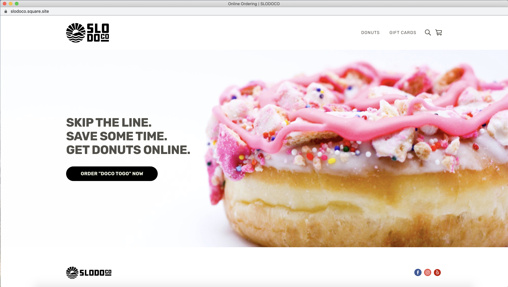
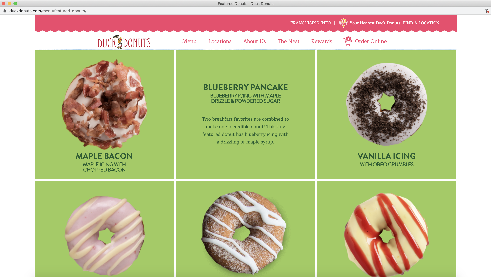
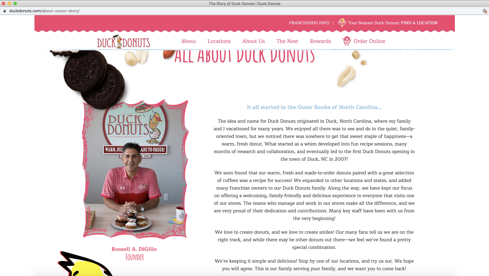

Final project proposal
Introduction
Down to Donut
Down to Donut is a bakery that incorporates sweets with art. The recipes are carefully crafted to ensure each cloud of sweetness is perfection in every bite. At Down to Donut, we bake our pasteries fresh everyday to give our customers a treat made with love that they deserve. These artisanal gourmet donuts are will leave customers mouths watering and coming back for more.
Target audience
Anyone with a sweet tooth that has an eye for design will be familiar with Down to Donut. There's a multitude of donuts from old fashion and glazed to vegan and protein style. Whether you're watching your waistline or not, Down to Donut has an answer for you!
Customers will come to this website to interact in a full experience of specialty donuts to help them choose their sweet treat before coming to the store. We come up with new flavors very often and update our menu with the current treats in store. All store hours and shop updates are posted on the website.
Comparative analysis
VG Donut and Bakery


SLODOCO

Duck Donuts
 Website content
Home
Are you Down to Donut?
[Array of Donuts.]
Check out our online menu to find your favorite!
Menu
Daily Selection may vary in store.
Donut #1
[Donut #1]
Donut #2
[Donut #2]
Donut #3
[Donut #3]
Donut #4
[Donut #4]
Donut #5
[Donut #5]
Donut #6
[Donut #6]
Donut #7
[Donut #7]
Donut #8
[Donut #8]
Donut #9
[Donut #9]
About
The Story Behind Down to Donut
[Donuts styled for photoshoot.]
Down to Donut is a bakery that incorporates sweets with art in central San Luis Obispo. The recipes are carefully crafted to ensure each cloud of sweetness is perfection in every bite. At Down to Donut, we bake our pasteries fresh everyday to give our customers a treat made with love that they deserve. These artisanal gourmet donuts are will leave customers mouths watering and coming back for more.
Location
[Inside shot of Down to Donut.]
Come visit us in store and taste the sugary bliss for yourself!
Address: 248 Hathway Avenue, San Luis Obispo, CA 93405
Phone: 760-840-7944
Email: downtodonut@dtd.com
Monday-Friday: 6:00am-8:00pm
Saturday-Sunday: 9:00am-10:00pm